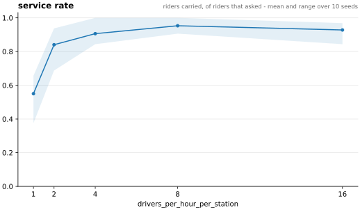
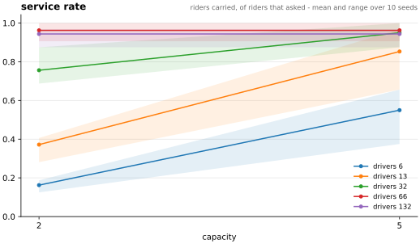
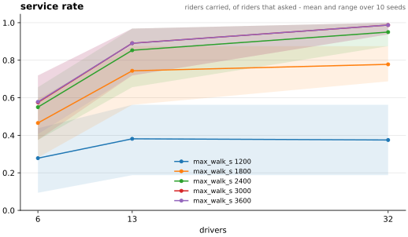
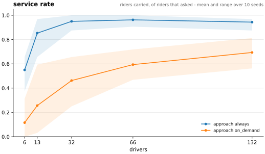
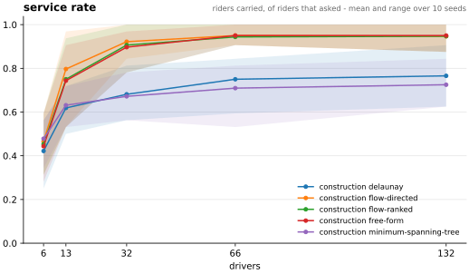
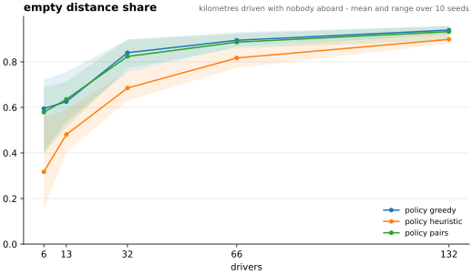
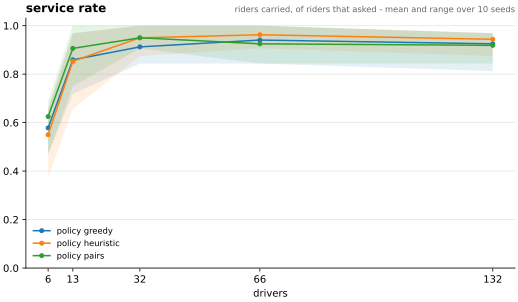
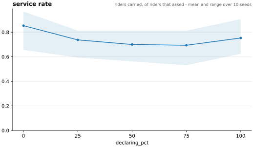
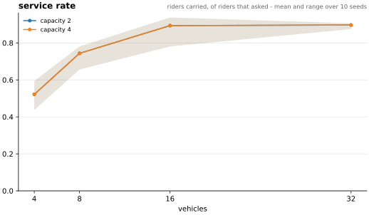
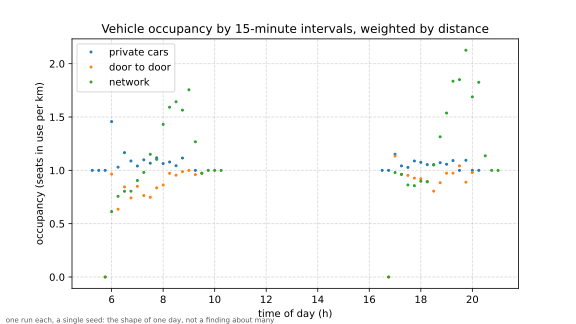

Yes, and the interesting part is what it costs. On a rural corridor in Mid Wales, thirteen enrolled drivers serve 85% of thirty-two riders at 6.8 vehicle-kilometres per passenger carried. Pushing the fleet to thirty-two vehicles gains another ten points of service rate and costs 13.9 km per passenger. Pushing it to a hundred and thirty-two adds nothing and costs 58.7 km per passenger. A low-flow ridesharing service is cheap while it is short of vehicles and ruinous the moment it has enough of them.
That is the answer from 930 simulated runs across eight committed experiments on the corridor, every one of them reproducible offline from the repository with no API key. The same engine then re-ran the two studies this work grew out of, on their own ground around Lyon, and one of their results did not survive. What follows is the argument.
North Ceredigion into Aberystwyth: five middle-layer super output areas, 44,485 residents, one town that takes the work, and seven stations across 23 km of the A487 and A44. 11,772 commutes run between the five areas; the largest single pair is 1,235 people a day, 62% of them driving alone. That is the low-flow case: thin enough that a shared ride is a real coordination problem rather than a queue.
Demand comes from the 2011 Census travel-to-work table, the most recent openly licensed area-to-area flow survey carrying a mode breakdown: it separates driving a car from riding in one, so the corridor brings with it an observed car-passenger share of 9.95% of car commutes. That is the one outside number available for asking whether a modelled occupancy is plausible at all, and not a target to tune against, which would make the whole thing circular. The stations come from OpenStreetMap, selected by rule rather than by hand. Two numbers in the corridor are invented and both are stated out loud: a scenario samples one in twenty of the observed flow and enrols one car driver in ten.
Every experiment runs the same ten seeds at every point on its axis, so two settings are never compared as two means with overlapping bands: the difference is computed seed by seed and reported as a mean, a standard deviation, and a count of how many seeds moved each way. That is not a significance test and is not offered as one.
Two conclusions in this project changed direction under it, and both had already been written down as results: a crossover between two dispatch rules that turned out to be noise, and a walking-threshold figure that was several revisions stale.

A fleet size is a fact about one scenario; the unit that travels is supply density. Every driver on the corridor sets off within the same hour and six of its seven stations are line origins, so a run's supply is drivers per hour per station. Swept at powers of two from one to sixteen, the knee is at two and it is the only step that is not arguable: one to two is +0.291 of service rate, on all ten seeds. Two to four adds 0.066, four to eight 0.047, and eight to sixteen nothing distinguishable at all.
Cost rises on every step and never stops: 4.9, 6.3, 11.7, 21.9 and 45.5 km per passenger served, so sixteen drivers an hour per station spend nine times the distance per passenger that one does and carry no more people than eight. What is left unserved at the top is not a supply problem either: every unserved rider there ended with no line inside its walking budget, which is the ceiling two sections below arriving from another direction. So the answer is two drivers an hour per station to have a service at all, four to have a good one, and nothing above four is worth its distance.
One caveat for every sweep here that moves a driver count: all draws are taken up front, cohort by cohort, so changing the number of drivers changes where the riders come out. A supply axis therefore pairs runs rather than demand. The steps this section rests on are far larger than that noise.

At six vehicles, two seats serve 16% of riders and five seats serve 55%. Over exactly the same 83.9 kilometres, because those drivers were making those trips anyway and the extra seats cost no distance at all. The same share of service can be reached by adding vehicles instead of seats, but the bill changes: where five seats manage it with thirteen vehicles, two seats need sixty-six, and sixty-six vehicles drive 891 km against 183. Five times the distance for the same service.
This is a statement about a corridor whose demand is thin and scattered. A vehicle passing a station is common; two riders wanting the same station at the same time is not.

The binding constraint on this service is not the dispatcher and not the fleet: it is how far somebody will walk to a station. At twenty minutes of total walking, adding vehicles stops working entirely: service goes 0.278 → 0.381 → 0.375 across a fleet that more than quintuples, so thirty-two vehicles serve no more people than thirteen and cost 37.9 km per passenger against 16.9. A rider with no line inside its own walking threshold never registers, so no amount of added supply can reach it.
The committed scenarios assume a maximum of forty minutes of walking across both ends: against the engine's thirty-minute default that is worth eleven points of service rate, on all ten seeds. The stations sit up to two kilometres from where the population actually is, because that is where they are in rural Wales.

Every other figure on this page has a registered driver drive to its line's station and wait there, up to its patience, for riders to arrive. The other reading of "registered" is a driver that drives its own route and stops only if somebody is already standing at a station ahead of it, which is how a driver who never looks at the app until it is passing would behave.
Stopping on demand loses between a quarter and three fifths of the service at every fleet size, on every seed: at thirteen drivers, 0.853 becomes 0.256. It does save distance, since there are no detours to empty stations and no dwell, but the distance it saves was carrying people: the empty share rises from 0.481 to 0.805, and the riders it still carries wait 680 s instead of 205. On a low-flow corridor a rider and a driver passing the same stop in the same minute is the exception, and the dwell is what turns a near miss into a ride. What a registered driver is asked to do at the station matters more than anything the dispatcher decides, and every other figure here is read under the generous answer.

Five constructions derive lines from the corridor's stations: free-form connects all 21 station pairs, Delaunay 14, flow-ranked 13 (ranked by the size of the commute), and the minimum spanning tree 6. The fifth, flow-directed, takes flow-ranked's 13 pairs and runs each one only in the direction the commute between its two areas runs. The hypothesis was that structuring the network would pay. The result was unexpected.
Halving the network is free. Flow-ranked's 13 pairs against free-form's 21 differ by under 0.01 of service at every fleet size, and most seeds produce identical results. Quartering it is not. Delaunay and the tree lose 0.18 to 0.24 of service at every fleet size above six, on all ten seeds. The tree drives the fewest kilometres, but only because it serves the fewest people.
And every symmetric construction loses to six lines drawn by hand. The corridor's hand-declared network is six one-way lines, all of them into Aberystwyth. Paired seed by seed it beats free-form by 0.106 at six vehicles and 0.109 at thirteen, on all ten seeds, and only stops winning once there are so many vehicles that the ranking finds everybody anyway. Six directed lines beat forty-two directed lines.
The mechanism is direction: every symmetric construction connects whatever it connects both ways, and on a radial morning commute half its lines run away from the work, where the dispatcher sometimes sends a driver. Orienting a construction by the demand recovers about half of that, and costs nothing. Flow-directed against flow-ranked moves exactly one variable, thirteen lines instead of twenty-six over the same pairs, and at thirteen vehicles it lifts service from 0.750 to 0.797. Not one seed at any fleet size goes the other way, and the distance difference is under two kilometres. That closes 46% of the gap to the hand-drawn network.
Why only half: flow-directed's thirteen lines are the hand-declared six plus seven more between outlying areas, because the table's next-biggest flows are real (533 people a day from one outlying area into another). Those are honest demand and still the wrong lines for this service, and the dispatcher sometimes hands one to a driver bound for town. Direction is necessary and not sufficient: structuring the network does not pay here, deriving it from geometry actively hurts, reading how big a flow is buys nothing, and reading which way it runs buys half of what a person drawing six lines by hand achieves.

The second dispatch rule drops the shared yardstick and sends each driver to the line with riders already standing on it. Paired seed by seed, it never measurably wins on service and loses on cost everywhere: its empty-distance share is worse at every fleet size, and at thirty-two vehicles it drives 234 extra kilometres, 55% more, for slightly less service. A driver that drifts towards somebody standing at a station is a driver going out of its way, and on 23 km lines that is the dominant term.
Worth being precise about a correction here, because it is the sort of thing that quietly becomes received wisdom. Looking at the means, the two rules appear to cross over: the demand-follower is ahead at small fleets and behind at large ones, and that was read as evidence of two heuristics each seeing what the other misses. But the lead at small fleets does not survive the seed-by-seed comparison: the seeds disagree about which of the two rules is ahead, so that lead is noise and only the cost difference survives. Neither rule is short of a mechanism the other has: both are short of scoring driver–rider pairs directly instead of keying a match on a line, which is the next section.

Both rules above key a match on the line both parties registered on, so a rider whose best line has no driver goes unserved even when a driver on its second choice would gladly have taken it. The third rule drops the line as the match key while keeping it as geometry: a rider still registers on its first choice and still starts walking there, but it stops being that line's property. Any driver may divert it, provided the walk it would still have to make, from wherever it has got to, is inside the threshold that rider declared. The score is a pair score: the driver's detour as a fraction of driving straight there, plus the rider's remaining walk as a fraction of its own limit. Neither party reads the other's unit, and neither threshold can be overruled by the dispatcher.
It is the first rule here to beat the ranking on service with a stable sign, and it does it only at the bottom of the fleet axis: +0.075 at six vehicles (seven seeds up of ten) and +0.053 at thirteen (eight of ten). At thirty-two the difference is exactly zero. At sixty-six and a hundred and thirty-two it goes the other way: −0.037 and −0.025, with no seed at all moving in its favour. The mechanism explains the flip: where vehicles are scarce a rider's chosen line often has nobody on it, and releasing it to whoever can reach it is a ride that would not otherwise happen; where vehicles are plentiful there is already a driver on every line, so diverting riders only moves them about.
It never wins on cost. Its empty-distance share is worse than the ranking rule's on all ten seeds at three of the five fleet sizes, and occupancy is worse on all ten seeds at four of them, and at thirteen vehicles it drives 8.6 km per passenger against 6.8. Sending a driver to collect somebody who was walking elsewhere is a real detour, and the rider's second walk is real too. Against the demand-following rule, though, it dominates: more service at thirteen and thirty-two vehicles (eight seeds up of ten, and seven), shorter waits at every fleet size, and at thirty-two it does it for 25 km less. On this corridor, though, not following demand at all remains cheaper than either rule.
Two ceilings, both deliberate. Each driver decides alone with no view of the rest of the fleet, so two of them can reach for the same rider and the first one wins. What that costs is measured: 10 lost races in a whole run at thirteen drivers, each costing the loser one second before it decides again, so seconds rather than rides. And a rider is diverted at most once, and only while it is still walking: sending somebody already standing at a station off to another one would restart the clock its patience is measured against and quietly inflate every service figure on this page.

A declaring rider stays where it is until a driver whose window overlaps its own claims it, and only then walks, to that driver's station. What it gets is being told when to leave instead of standing at a stop hoping; what it risks is that the claim never comes. Moving the declaring share from nobody to everybody, the wait falls monotonically and the service never recovers: the mean wait goes from 205 s to 17 s, twelve times less and on every seed, while service falls from 0.853 to 0.753 at full adoption and further at every partial level, the worst at 75%. Distance does not move at all, 180 to 183 km across the whole axis, so this is the same driving rearranged rather than a cheaper service.
Partial adoption is worse than either end. A declaring rider stands at no station, so only a declaring driver can reach it: at 25% adoption eight riders compete for four drivers while twenty-four compete for nine. The market splits in two and the smaller half is short of vehicles. On this corridor advance declaration is a waiting-time lever, not a service-rate lever, and it needs near-total adoption before it stops actively hurting.

Run the same thirty-two riders on a door-to-door robotaxi fleet and it needs sixteen vehicles to reach 0.894, comparable to thirteen carpool drivers' 0.853, and drives 2.2 times as far per person carried to do it: 14.8 km per passenger against 6.8, with over half its kilometres empty, an occupancy of 0.46 against 1.35, and a mean wait for collection of over ten minutes. The mechanism is one structural difference: a fleet vehicle has no trip of its own, so every empty kilometre is a cost the service pays, where a carpool driver's empty kilometres are somebody's commute. Adding vehicles saturates rather than fixes it: thirty-two serve 0.897.
Two seats and four produce identical results, on every seed at every fleet size. The second seat is never used: riders are scattered and the fleet pools only riders standing within fifty metres of each other, so on this corridor two riders are never at the same place at the same time. The seats-beat-vehicles result that holds for carpooling by a factor of five is worth exactly nothing to a fleet.
One note, and it pulls in the same direction as the conclusion: every door-to-door leg is measured as a straight line while the carpool legs use real road geometry, so the fleet's distance is understated and the true gap is wider.
This work grew out of two earlier studies with an earlier Python simulator: my MSc thesis on advance declaration for carpooling, on the lane from Bourgoin-Jallieu into Lyon, and the PFIA 2025 paper on structured networks for an autonomous on-demand fleet across the Rhône. Both were re-run on their own ground, rebuilt from open data (close to the published demand, not equal to it). Every scenario was run three ways, ten seeds each: by the original simulator itself, headless and offline; by this engine as the original ran, with its tick, its walking speed and its bugs as switches; and by this engine corrected. Two agreement tests were fixed before any of it was looked at: this engine's as-ran mean inside the original's seed range, and every between-scenario difference pointing the same way in both.
Its claim was that a fleet run over a structured network of seventeen stations beats the same fleet door to door: fewer kilometres, fuller vehicles, collective transport rather than taxis. At the 100 sample, ten seeds each:
| Service | Occupancy | Vehicle-km | Mean wait | |
|---|---|---|---|---|
| Door to door, original simulator | 0.906 | 0.878 | 45,839 | 252 s |
| Network, original simulator | 0.442 | 1.318 | 39,227 | 1,389 s |
| Door to door, corrected | 0.999 | 0.843 | 48,471 | 235 s |
| Network, corrected | 0.954 | 0.771 | 86,267 | 967 s |
The original's network does drive fewer kilometres at higher occupancy, and it serves fewer than half its riders. Three defects in the original make that shape, each measured in its own runs:
Corrected, the network loses on every axis: 0.954 of service against 0.999, occupancy 0.771 against 0.843, and 78% more vehicle-kilometres, because a rider changing taxi at every station is a taxi driving out to every station. The 10 sample says the same at eight times the demand: 541,558 vehicle-kilometres against 298,536. That is the Welsh corridor's fleet result arrived at from the other direction: structuring the network does not rescue an on-demand fleet, and what looked like it did was the operator dropping riders.

Over the 1,872 cells of the advance-declaration grid, this engine's mean falls inside the original's seed range in 1,709 cells for service and 1,780 for waiting time. Where the original's own difference between full declaration and none is larger than its noise, the waiting time moves the same way in 43 of 46 cells. As the original ran it, full declaration on both sides leaves the average wait where it was, 506 s against 508 s. That is the thesis's finding: a path only under full adoption, and no clear separation even there.
The reason is that half of it was switched off. The declaring rider was meant to time its departure to the driver coming for it and never did: its window bounds carry a sign error, no driver ever fits, and the rider always leaves at its declared time. Only the driver side of anticipated declaration ever ran. Corrected, with both sides timing to each other, full declaration cuts the average wait from 507 s to 382 s, a quarter. The departure guarantee every grid scenario configured was also never put into the world, so no published run had one.
Where the reproduction falls short, stated rather than tuned away. Over the network as ran this engine serves 0.305 against the original's 0.416–0.464, because the misboarding above is deliberately not reproduced. Kilometres run about 7% under the original's, which scatters trip ends over a square where this engine uses a disc of the same radius. On the carpool grid, service moves the same way in only 25 of 62 separable cells, the disagreements sitting where the two engines time a driver to its rider differently. The original was not run at the 10 sample: one seed had not finished after 84 minutes, so the 10-sample figures above are this engine's alone.
Nothing above involved a language model, and no model figure exists yet. Every number on this page was produced by a fixed rule, offline, deterministically. What follows is an engineering claim about how you would measure one honestly, not a result about one.
The dispatcher sits behind a trait with four decisions: which line a driver takes, whether to spend a guarantee vehicle on a rider who has waited too long, which idle vehicle collects which rider, and where an idle vehicle waits. Five implementations plug into the same seam: the three fixed rules above, a model on every decision, and a model only where the first two fixed rules disagree. It is the same seam the fixed rules use, measured on the same mobility columns, with cost per decision and invalid-action rate reported beside them.
Two things make the model implementations affordable, and both are measured rather than asserted. Every decision is event-driven, so nothing costs a call per tick or per agent per tick; and every answer is memoised on the exact bytes of its context, which works only because no context carries the wall clock: a question carrying the clock is a different question every second and could never be reused. The result: 3,913 decisions in 44 calls, or 2,239 in 22 for the exceptions-only variant. Those counts were measured against a stub that answers from a rule, so they measure the machinery and say nothing about a model.
The comparison takes running a single command, at a cost of about $11 of tokens, and the bars it has to clear are written down before the run rather than after. For the line choice that is 0.906 at thirteen vehicles, that is pair scoring and not the 0.853 of the ranking rule, because the bar moved when the third rule landed; and there is a cost baseline it must not overrun. For the network-design question it is 0.797 to be worth having, the construction that reads the demand's direction, and 0.853 to match six hand-drawn one-way lines, rather than the 0.750 of flow-ranked, because a win against the weaker opponent would not be a result. Repositioning an idle vehicle competes against doing nothing, which is a low bar. If the fixed rule wins, that is the number that gets reported.
The order of work is this: define the metric first, build the baseline, add the model, measure the delta, publish the number even when it is unflattering. An invalid action is counted and refused, never retried, because asking the same question again is the retry and a retry loop would hide exactly the number worth having. A dead model process fails the run rather than finishing under a fixed rule wearing the model's name.
No behavioural response to the incentive: a payout moves two accounting columns and nothing else, which is what keeps every other comparison valid across schemes. No fleet-wide assignment: pair scoring is greedy per driver, so a contested rider goes to whichever driver comes first rather than to the cheapest pair. Walking and driving speeds are drawn once per run rather than per agent, because the ranking rule needs both parties to price a line identically. Walks to stations and every door-to-door leg take a straight-line fallback, which gets the time right and understates the distance.
Two things the write-up tries not to do. An effect that fails to separate is not an effect that has been ruled out: where ten seeds cannot tell two rules apart, that is what is reported. And a metric from a run that hit the clock cap is not a finding at all; the engine reports stranded agents separately so that a cut-off run can never be quietly averaged in, and no committed sweep on the corridor has one.
Rust, single binary, no HTTP client and no async runtime: the one command that needs road
geometry shells out to curl and commits its output, and the model lives behind a
Python sidecar speaking line-delimited JSON over a pipe. Agents live in a flat vector and
reference each other by index; deciding is a pure function returning an influence that a later
pass resolves, which is what made the dispatcher swappable without touching a state machine. One
seeded generator owns every draw, so a run under a fixed rule is a pure function of its scenario
and its seed: the same seed writes byte-identical output, and so does a regenerated chart. The
behaviours the earlier simulator had are there too, each behind a switch that is off by default,
which is how the re-runs above could run it as it ran without moving a single committed number on
the corridor.
Predecessor: a Python multi-agent simulator, my MSc thesis and a PFIA 2025 paper on network structuring for autonomous on-demand mobility. This is a rewrite that asks the cost question the earlier work could not answer, and re-runs both earlier studies on their own ground.